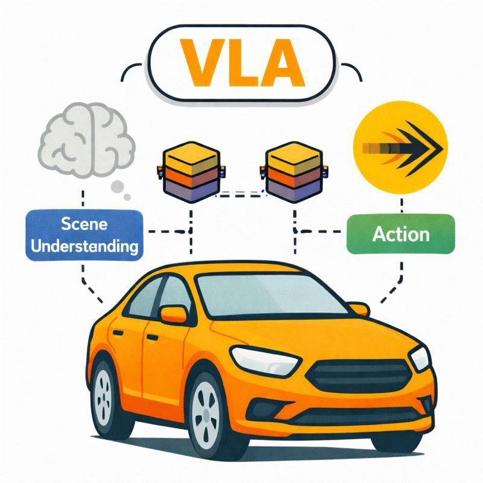
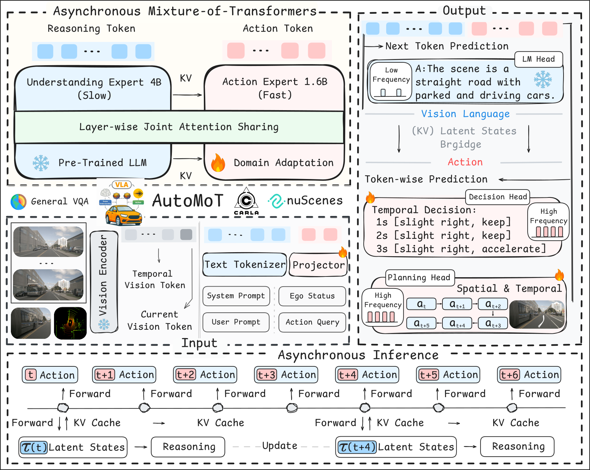
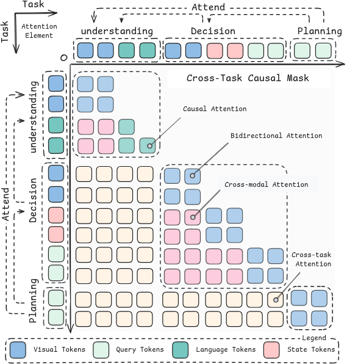
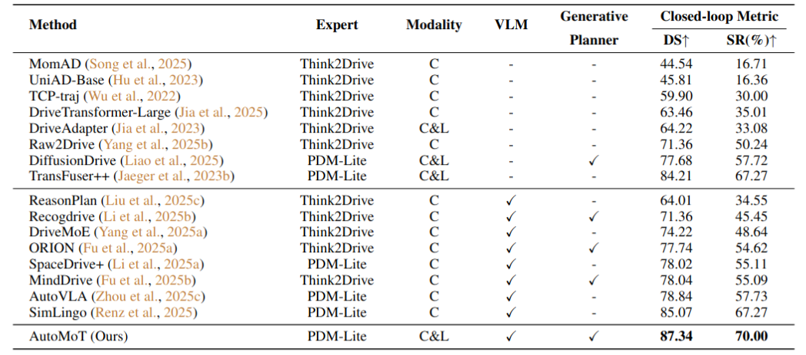
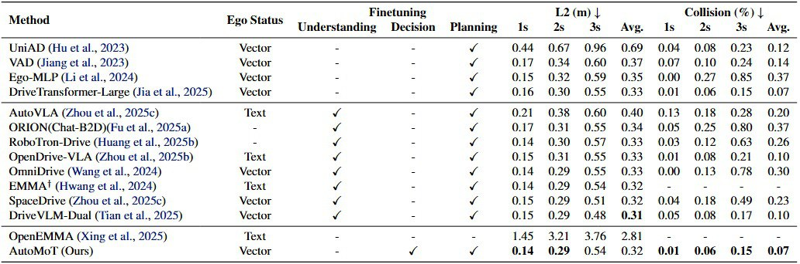

AutoMoT: A Unified Vision-Language-Action Model with Asynchronous Mixture-of-Transformers for End-to-End Autonomous Driving🎉🎉🎉 Accepted to ICML 2026! 🎉🎉🎉
Example closed-loop runs in CARLA showcasing key scenarios.
Integrating vision-language models (VLMs) into end-to-end (E2E) autonomous driving (AD) systems has shown promise in improving scene understanding. However, existing integration strategies suffer from several limitations: they either struggle to resolve distribution misalignment between reasoning and action spaces, underexploit the general reasoning capabilities of pretrained VLMs, or incur substantial inference latency during action policies generation, which degrades driving performance. To address these challenges, we propose AutoMoT in this work, an end-to-end AD framework that unifies reasoning and action generation within a single vision-language-action (VLA) model. Our approach leverages a mixture-of-transformer (MoT) architecture with joint attention sharing, which preserves the general reasoning capabilities of pre-trained VLMs while enabling efficient fast-slow inference through asynchronous execution at different task frequencies. Additionally, we introduce a VLA-oriented differentiable action refiner that further enhances driving performance via diffusion-based fine-tuning. Extensive experiments on multiple benchmarks, under both open- and closed-loop settings, demonstrate that AutoMoT achieves competitive performance compared to state-of-the-art methods.

As an end-to-end autonomous driving framework, AutoMoT unifies scene understanding, decision-making, and trajectory planning within a single VLA model. AutoMoT adopts a MoT architecture that connects the understanding expert and the action expert via layer-wise joint attention sharing, while enabling fast-slow inference through asynchronous execution at different frequencies. A VLA-oriented differentiable action refiner is further integrated to enhance driving performance via diffusion-based refinement.

Our mask coordinates understanding, decision-making, and planning within a unified attention space. It enables intra-task multi-modal aggregation and cross-task information flow while preserving task-level causal ordering. This hybrid design maintains hierachical causality and supports rich contextual integration, enabling AutoMoT to achieve coherent multi-task reasoning and trajectory planning.

Comparison of the Closed-loop Planning in CARLA Bench2Drive Leaderboard. C/L refers to the camera/LiDAR input. DS: Driving Score, SR: Success Rate.

Comparison of the Open-loop planning in nuScenes. The ST-P3 evaluation protocol is used by default.